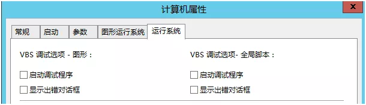
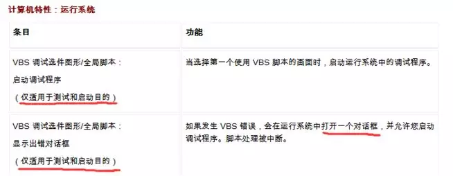
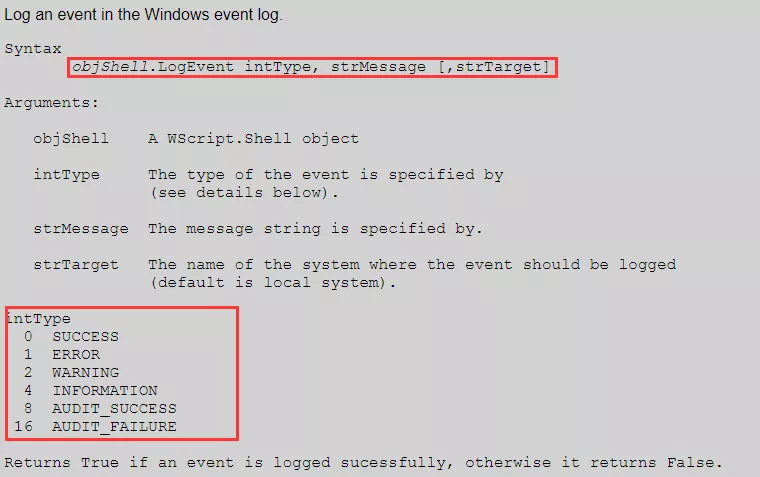
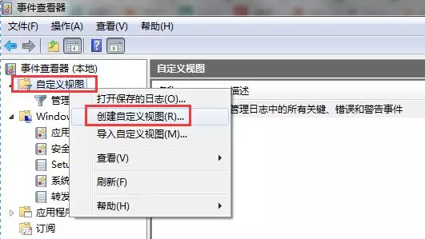
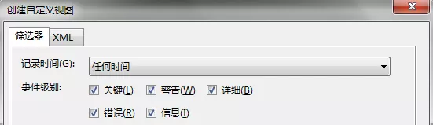
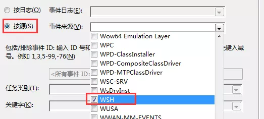
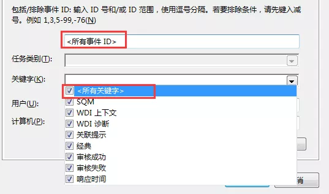
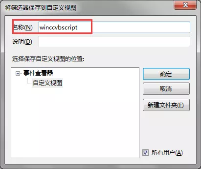
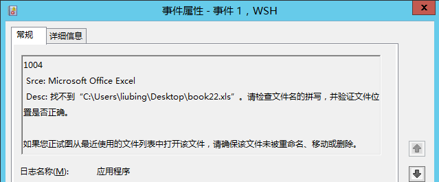

1.VBScript脚本读写Excel文件
使用一个示例来讲解：打开Excel文件book1.xls、book2.xls，把book1表Sheet1单元A1的内容赋值给book2表Sheet1单元B1。
1 | '声明变量 |
2.VBScript脚本执行的信息记录
对于投运后的WINCC项目，一般不启用VBS的调试选项。

如果运行中HMI突然跳出个错误信息对话框，可能会吓了运行人员。

但是对于运行中的系统，通常需要log记录一些脚本执行中的信息（如脚本被执行了进行了哪些操作、脚本执行中发生了哪些问题），以便当系统发生故障时提供诊断信息。
这里提供一种使用“系统事件功能”记录脚本执行中信息的方法。
3.写入系统事件
3.1VBscript启用错误处理
方法：在脚本过程中添加语句：On Error Resume Next，以调用错误信息。一条错误信息主要包括3个部分:
- Err.Number
- Err.Source
- Err.Description
可随时检查脚本执行中信息代码Err.Number的值，如对象访问的返回结果。当发生访问对象错误时，会转到紧接着发生错误的语句之后的语句，并在此继续运行。
如上面的脚本，当打开的book1工作簿不存在时，声明工作簿对象发生错误，通过判断Err.Number的值，并根据错误类型来做相应的处理（如弹出窗口，或在画面中诊断窗口输出，或写入系统事件等）
修改脚本：
1 | Set Workbook1 = ExcelApp.Workbooks.open("C:\Users\liubing\Desktop\book1.xls") |
3.2VBScript写入系统事件
VBScript使用WScript.Shell对象.LogEvent方法写入系统应用程序事件:objShell.LogEvent intType, strMessage [,strTarget]

方法中参数intType为事件的ID，用来定义事件的级别。
修改脚本：
1 | '创建WScript.Shell对象 |
4.配置事件查看器
打开系统“事件查看器”，创建自定义视图来单独显示WHS应用程序事件

“记录时间”选择“任何时间”，“事件级别”可全部选中，也可以按不同的事件级别创建更细分的视图。

“按源”来显示事件，“事件来源”选择“WHS”

选择“所有事件ID”，也可以按不同的ID创建更细分的视图。“关键字”选择“所有关键字”。

其它选项使用默认设置即可，具体使用方法可查看事件查看器帮助。

点击“确认”，在弹出的对话框为创建的视图输入一个名称，再点击“确认”，一个自定义的事件视图即创建完成。

从中可以查看Vbscript脚本记录的各种信息：
